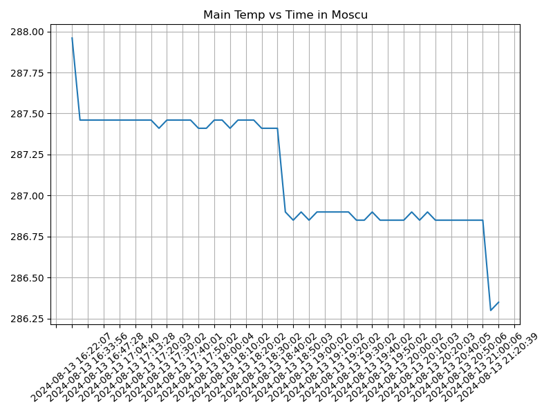
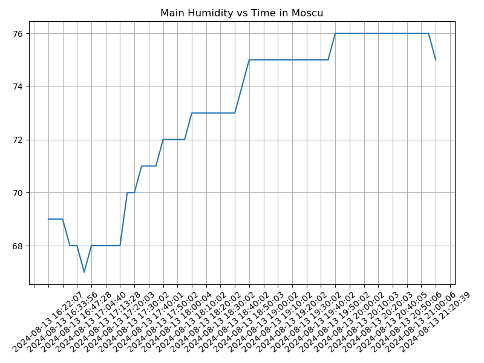
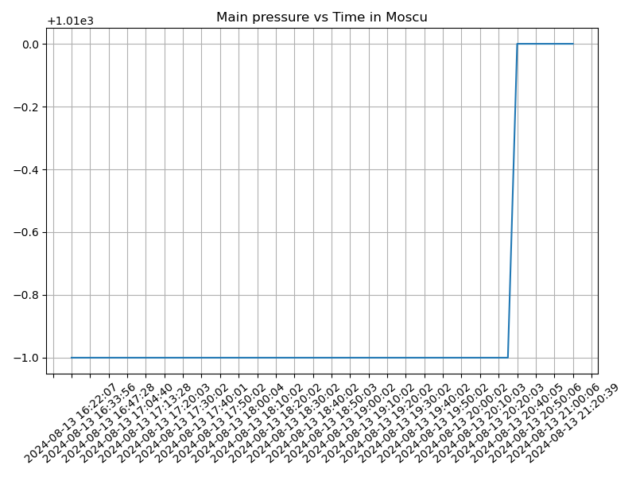

Proyecto ICCD332 Arquitectura de Computadores
Índice
- 1. City Weather APP
- 1.1. Estructura del proyecto
- 1.2. Formulación del Problema
- 1.3. Descripción del código
- 1.4. 1. Importación de librerías
- 1.5. 2. Configuración de la API y parámetros de la solicitud
- 1.6. 3. Realización de la solicitud y procesamiento de la respuesta
- 1.7. 4. Escritura de los datos en un archivo CSV
- 1.8. Script ejecutable sh
- 1.9. Configuración de Crontab
- 2. Presentación de resultados
- 3. Referencias
1. City Weather APP
Este es el proyecto de fin de semestre en donde se pretende demostrar las destrezas obtenidas durante el transcurso de la asignatura de Arquitectura de Computadores.
- Conocimientos de sistema operativo Linux
- Conocimientos de Emacs/Jupyter
- Configuración de Entorno para Data Science con Mamba/Anaconda
- Literate Programming
1.1. Estructura del proyecto
Se recomienda que el proyecto se cree en el home del sistema operativo i.e. home/<user>. Allí se creará la carpeta CityWeather
#cd .. #cd .. pwd
/home/alexis/MoscuWeather/weather-site/content
El proyecto ha de tener los siguientes archivos y subdirectorios. Adaptar los nombres de los archivos según las ciudades específicas del grupo.
.
├── CityTemperatureAnalysis.ipynb
├── CityTemperatureAnalysis.ipynb:Zone.Identifier
├── clima-moscu-hoy.csv
├── get-weather.sh
├── get-weather.sh:Zone.Identifier
├── main (1).py:Zone.Identifier
├── main.py
├── main.py:Zone.Identifier
├── main.py~
└── weather-site
├── build-site.el
├── build-site.el:Zone.Identifier
├── build.sh
├── build.sh:Zone.Identifier
├── content
│ ├── #index.org#
│ ├── images
│ ├── index.org
│ ├── index.org:Zone.Identifier
│ └── index.org~
└── public
├── images
└── index.html
6 directories, 18 files
Puede usar Emacs para la creación de la estructura de su proyecto
usando comandos desde el bloque de shell. Recuerde ejecutar el bloque
con C-c C-c. Para insertar un bloque nuevo utilice C-c C-, o M-x
org-insert-structure-template. Seleccione la opción s para src y
adapte el bloque según su código tenga un comandos de shell, código de
Python o de Java. En este documento .org dispone de varios ejemplos
funcionales para escribir y presentar el código.
mkdir CityWeather cd CityWeather mkdir weather-site cd weather-site mkdir contents mkdir public cd contents mkdir images cd .. cd public mkdir images
1.2. Formulación del Problema
Se desea realizar un registro climatológico de una ciudad \(\mathcal{C}\). Para esto, escriba un script de Python/Java que permita obtener datos climatológicos desde el API de openweathermap. El API hace uso de los valores de latitud \(x\) y longitud \(y\) de la ciudad \(\mathcal{C}\) para devolver los valores actuales a un tiempo \(t\).
Los resultados obtenidos de la consulta al API se escriben en un archivo clima-<ciudad>-hoy.csv. Cada ejecución del script debe almacenar nuevos datos en el archivo. Utilice crontab y sus conocimientos de Linux y Programación para obtener datos del API de openweathermap con una periodicidad de 15 minutos mediante la ejecución de un archivo ejecutable denominado get-weather.sh. Obtenga al menos 50 datos. Verifique los resultados. Todas las operaciones se realizan en Linux o en el WSL. Las etapas del problema se subdividen en:
- Conformar los grupos de 2 estudiantes y definir la ciudad objeto de estudio.
- Crear su API gratuito en openweathermap
- Escribir un script en Python/Java que realice la consulta al API y escriba los resultados en clima-<ciudad>-hoy.csv. El archivo ha de contener toda la información que se obtiene del API en columnas. Se debe observar que los datos sobre lluvia (rain) y nieve (snow) se dan a veces si existe el fenómeno.
Desarrollar un ejecutable get-weather.sh para ejecutar el programa Python/Java.1
- Configurar Crontab para la adquisición de datos. Escriba el comando configurado. Respalde la ejecución de crontab en un archivo output.log
Realizar la presentación del Trabajo utilizando la generación del sitio web por medio de Emacs. Para esto es necesario crear la carpeta weather-site dentro del proyecto. Puede ajustar el look and feel según sus preferencias. El servidor a usar es el simple-httpd integrado en Emacs que debe ser instalado:
- Usando comandos Emacs:
M-x package-installpresionamos enter (i.e. RET) y escribimos el nombre del paquete: simple-httpd - Configurando el archivo init.el
(use-package simple-httpd :ensure t)
Instrucciones de sobre la creación del sitio web se tiene en el vídeo de instrucciones y en el archivo Org-Website.org en el GitHub del curso
- Usando comandos Emacs:
- Su código debe estar respaldado en GitHub/BitBucket, la dirección será remitida en la contestación de la tarea
1.3. Descripción del código
En esta sección se debe detallar segmentos importantes del código desarrollado así como la estrategia de solución adoptada por el grupo para resolver el problema. Divida su código en unidades funcionales para facilitar su presentación y exposición.
1.4. 1. Importación de librerías
El código comienza con la importación de librerías necesarias:
import requests import csv from datetime import datetime import os
1.5. 2. Configuración de la API y parámetros de la solicitud
Se define la clave de API, la latitud y longitud de la ubicación, y se construye la URL para realizar la solicitud.
api_key = '4a3c0e6465643426b5015070674af0d' latitude = 55.75222 longitude = 37.61556 url = f'http://api.openweathermap.org/data/2.5/weather?lat={latitude}&lon={longitude}&appid={api_key}'
1.6. 3. Realización de la solicitud y procesamiento de la respuesta
Se realiza la solicitud HTTP y se procesa la respuesta JSON. Si la respuesta contiene los datos esperados, se extraen y formatean.
response = requests.get(url) data = response.json() if 'main' in data: weather = { 'datetime': datetime.now().strftime('%Y-%m-%d %H:%M:%S'), 'temperature': data['main']['temp'], 'humidity': data['main']['humidity'], 'pressure': data['main']['pressure'], 'weather': data['weather'][0]['description'] }
1.7. 4. Escritura de los datos en un archivo CSV
Se verifica si el archivo CSV ya existe. Si no existe, se escribe la cabecera del archivo. Luego, se registran los datos obtenidos en el CSV.
file_exists = os.path.isfile('./MoscuWeather/clima-moscu-hoy.csv') with open('/home/alexis/MoscuWeather/clima-moscu-hoy.csv', 'a', newline='') as csvfile: fieldnames = ['datetime', 'temperature', 'humidity', 'pressure', 'weather'] writer = csv.DictWriter(csvfile, fieldnames=fieldnames) if not file_exists: writer.writeheader() writer.writerow(weather)
1.8. Script ejecutable sh
Se coloca el contenido del script ejecutable. Recuerde que se debe utilizar el entorno de anaconda/mamba denominado iccd332 para la ejecución de Python; independientemente de que tenga una instalación nativa de Python
En el caso de los shell script se puede usar `which sh` para conocer la ubicación del ejecutable
which sh
/usr/bin/sh
De igual manera se requiere localizar el entorno de mamba iccd332 que será utilizado
which mamba
/home/alexis/miniforge3/condabin/mamba
Con esto el archivo ejecutable a de tener (adapte el código según las condiciones de su máquina):
#!/usr/bin/sh source /home/alexis/miniforge3/etc/profile.d/conda.sh eval "$(conda shell.bash hook)" conda activate iccd332 cd .. cd .. python main.py
Finalmente convierta en ejecutable como se explicó en clases y laboratorio
#!/usr/bin/sh cd .. cd .. #!/bin/bash python3 /home/alexis/MoscuWeather/main.py chmod +x get-weather.sh ./get-weather.sh
1.9. Configuración de Crontab
Se indica la configuración realizada en crontab para la adquisición de datos
*/5 * * * * cd /home/alexis/MoscuWeather && ./get-weather.sh >> output.log 2>&1
- Recuerde remplazar <City> por el nombre de la ciudad que analice
- Recuerde ajustar el tiempo para potenciar tomar datos nuevos
- Recuerde que
2>&1permite guardar enoutput.logtanto la salida del programa como los errores en la ejecución.
2. Presentación de resultados
Para la pressentación de resultados se utilizan las librerías de Python:
- matplotlib
- pandas
Alternativamente como pudo estudiar en el Jupyter Notebook
CityTemperatureAnalysis.ipynb, existen librerías alternativas que se
pueden utilizar para presentar los resultados gráficos. En ambos
casos, para que funcione los siguientes bloques de código, es
necesario que realice la instalación de los paquetes usando mamba
install <nombre-paquete>
2.1. Muestra Aleatoria de datos
Presentar una muestra de 10 valores aleatorios de los datos obtenidos.
import os import pandas as pd # lectura del archivo csv obtenido df = pd.read_csv('/home/alexis/MoscuWeather/clima-moscu-hoy.csv') # se imprime la estructura del dataframe en forma de filas x columnas print(df.shape)
table1 = df.sample(10) table = [list(table1)]+[None]+table1.values.tolist()
| datetime | temperature | humidity | pressure | weather |
|---|---|---|---|---|
| 2024-08-13 19:05:02 | 286.9 | 75 | 1009 | broken clouds |
| 2024-08-13 17:35:02 | 287.46 | 71 | 1009 | broken clouds |
| 2024-08-13 16:33:56 | 287.46 | 69 | 1009 | scattered clouds |
| 2024-08-13 18:35:02 | 287.41 | 73 | 1009 | broken clouds |
| 2024-08-13 16:47:28 | 287.46 | 68 | 1009 | scattered clouds |
| 2024-08-13 21:20:39 | 286.35 | 75 | 1010 | scattered clouds |
| 2024-08-13 21:05:06 | 286.3 | 76 | 1010 | scattered clouds |
| 2024-08-13 17:45:02 | 287.46 | 71 | 1009 | broken clouds |
| 2024-08-13 17:30:02 | 287.46 | 70 | 1009 | scattered clouds |
| 2024-08-13 17:04:40 | 287.46 | 68 | 1009 | scattered clouds |
2.2. Gráfica Temperatura vs Tiempo
Realizar una gráfica de la Temperatura en el tiempo.
El siguiente cógido permite hacer la gráfica de la temperatura vs
tiempo para Org 9.7+. Para saber que versión dispone puede ejecutar
M-x org-version
import matplotlib.pyplot as plt import matplotlib.dates as mdates # Define el tamaño de la figura de salida fig = plt.figure(figsize=(8,6)) plt.plot(df['datetime'], df['temperature']) # dibuja las variables dt y temperatura # ajuste para presentacion de fechas en la imagen plt.gca().xaxis.set_major_locator(mdates.DayLocator(interval=2)) #plt.gca().xaxis.set_major_formatter(mdates.DateFormatter('%Y-%m-%d %H:%M:%S')) plt.grid() # Titulo que obtiene el nombre de la ciudad del DataFrame plt.title(f'Main Temp vs Time in Moscu') plt.xticks(rotation=40) # rotación de las etiquetas 40° fig.tight_layout() fname = './images/temperature.png' plt.savefig(fname) fname

Debido a que el archivo index.org se abre dentro de la carpeta
content, y en cambio el servidor http de emacs se ejecuta desde la
carpeta public es necesario copiar el archivo a la ubicación
equivalente en /public/images
cp -rfv ./images/* /home/alexis/MoscuWeather/weather-site/public/images
2.3. Realice una gráfica de Humedad con respecto al tiempo
import matplotlib.pyplot as plt import matplotlib.dates as mdates # Define el tamaño de la figura de salida fig = plt.figure(figsize=(8,6)) plt.plot(df['datetime'], df['humidity']) # dibuja las variables dt y temperatura # ajuste para presentacion de fechas en la imagen plt.gca().xaxis.set_major_locator(mdates.DayLocator(interval=2)) # plt.gca().xaxis.set_major_formatter(mdates.DateFormatter('%Y-%m-%d')) plt.grid() # Titulo que obtiene el nombre de la ciudad del DataFrame plt.title(f'Main Humidity vs Time in Moscu') plt.xticks(rotation=40) # rotación de las etiquetas 40° fig.tight_layout() fname = './images/humidity.png' plt.savefig(fname) fname

cp -rfv ./images/* /home/alexis/MoscuWeather/weather-site/public/images
2.4. Opcional Presente alguna gráfica de interés.
import matplotlib.pyplot as plt import matplotlib.dates as mdates # Define el tamaño de la figura de salida fig = plt.figure(figsize=(8,6)) plt.plot(df['datetime'], df['pressure']) # dibuja las variables dt y temperatura # ajuste para presentacion de fechas en la imagen plt.gca().xaxis.set_major_locator(mdates.DayLocator(interval=2)) # plt.gca().xaxis.set_major_formatter(mdates.DateFormatter('%Y-%m-%d')) plt.grid() # Titulo que obtiene el nombre de la ciudad del DataFrame plt.title(f'Main pressure vs Time in Moscu') plt.xticks(rotation=40) # rotación de las etiquetas 40° fig.tight_layout() fname = './images/presure.png' plt.savefig(fname) fname

cp -rfv ./images/* /home/alexis/MoscuWeather/weather-site/public/images
3. Referencias
Notas al pie de página:
Recuerde que su máquina ha de disponer de un entorno de anaconda/mamba denominado iccd332 en el cual se dispone del interprete de Python